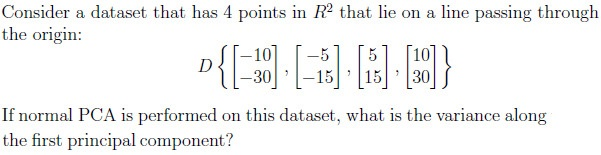
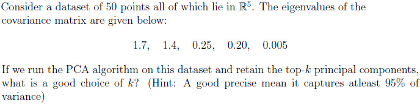
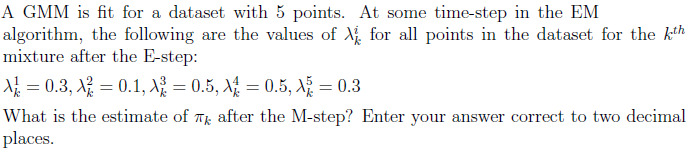
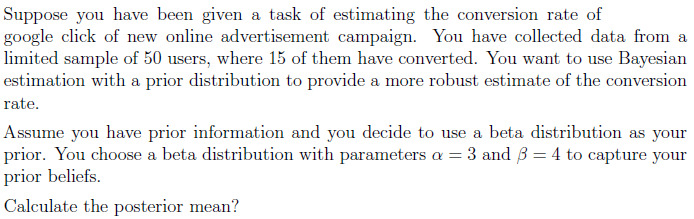
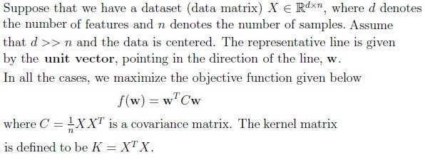
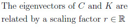
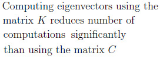
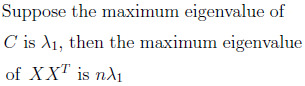
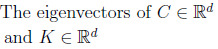
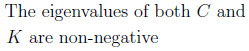

It remains in the same cluster as in the first iteration
Q3MSQ4 marksselect all that apply
Which of the following statements are true regarding applying standard PCA on a centered dataset?
The variance of the dataset along the first principal component is maximum.
Eigenvectors are always orthogonal to each other in PCA.
The first principal component is the eigenvector corresponding to the largesteigenvalue of the covariance matrix.
The first principal component is the eigenvector corresponding to the smallesteigenvalue of the covariance matrix.
Q4SA4 marks
Consider a dataset that has 200 data-points, each of which is either a zero or one. The Bernoulli distribution is used to model this data. If the MLE estimate for the parameter p of the Bernoulli distribution is 0.3, how many zeros does the dataset have?
Q5SA4 marks

Q6SA4 marks

Q7SA4 marks

Q8SA3 marks
Enter your answer correctly up to two decimals

Comprehension passage - the questions below it refer to this
A k-means++ algorithm with k= 3 was applied to the following 2D points: (2, 2), (3, 3), (4, 4), (10, 10), (12, 12), (13, 13) (2, 2) is chosen as the first cluster mean. Based on the above data, answer the given subquestions.
Q9MCQ4 marks
Which point has the highest probability of being chosen as the 2nd cluster mean? Use the Manhattan distance to compute the distances.
(4, 4)
(12, 12)
(10, 10)
(13, 13)
Q10MCQ4 marks
Let’s assume that (3, 3), (10, 10), and (12, 12) are the cluster means. You introduce a new data point, (−5, 10). Which cluster mean is the data point (−5, 10) closest to when using the Euclidean distance method?
(3, 3)
(10, 10)
(12, 12)
None of these
Comprehension passage - the questions below it refer to this
Based on the above data, answer the given subquestions.

Q11MSQ4 marksselect all that apply
Which of the following statements are true?





Q12MCQ4 marks
Which of the following matrices helps in transforming the eigenvectors of K to the eigenvectors of C?
X
XT
C-1
K-1
X-1
Q13MCQ3 marks
Suppose that the 95% of the variance of the data is captured using d − 1 eigenvectors. This implies that
Auto-generated summary from the source site. Handy as a checklist; the lessons above explain each idea from scratch.
Summary of Core Topics, Concepts, Principles, and Equations
1. K-Means Clustering
Concepts: Cluster centroids, sum of squared distances, cluster assignment.
Principles: Minimize the sum of squared distances between data points and their assigned centroids.
Equations:
μk=∑1(zi=k)∑xi1(zi=k)
where xi is the ith data point and zi is the cluster assignment for xi.
2. Principal Component Analysis (PCA)
Concepts: Eigenvalues, eigenvectors, covariance matrix, variance, principal components.
Principles: PCA transforms data to a new coordinate system where the greatest variance lies on the first axis (first principal component), the second greatest variance on the second axis, and so on.
Equations:
C=n1XXT
f(w)=wTCw
where C is the covariance matrix and w is the unit vector pointing in the direction of the line.
3. Bernoulli Distribution and Maximum Likelihood Estimation (MLE)